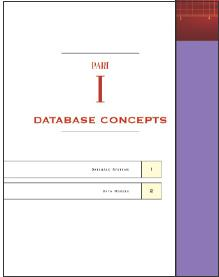
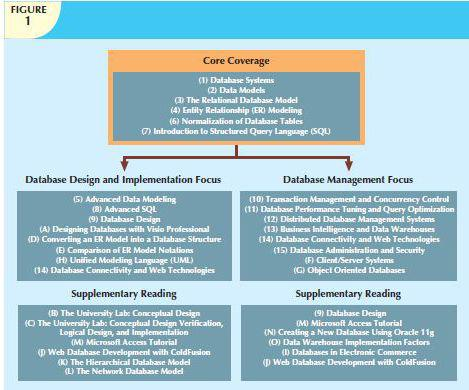

A tenth edition is a milestone that few textbooks achieve. We wrote the first edition of this book because we wanted to explain the complexity of database systems in a language that was easy for students to understand. Over the years, we have maintained this emphasis on reaching out to students to explain complex concepts in a practical, approachable manner. This book has been successful through nine editions because the authors, editors, and the publisher paid attention to the impact of technology and to adopter questions and suggestions. We believe that this tenth edition successfully reflects the same attention to such factors.
In many respects, rewriting a book is more difficult than writing it the first time. If the book is successful, as this one is, a major concern is that the updates, inserts, and deletions will adversely affect writing style and continuity of coverage. The combination of superb reviewers and editors, plus a wealth of feedback from adopters and students of the previous editions, helped make this new edition the best yet.
CHANGES TO THE TENTH EDITION
In this tenth edition, we have added some new features and reorganized some coverage to provide a better flow of material. Aside from enhancing the already strong coverage of database design, we have made other improvements in the topical coverage. Here are a few of the highlights:
• Updated Business Vignettes showing the impact of database technologies in the real world
• Expanded coverage of cloud data services such as Platform as a Service, Software as a Service, and Infrastructure as a Service
• Added coverage of the emergence of Big Data and related NoSQL data models
• Enhanced and streamlined coverage of business intelligence and data analytics
• Streamlined coverage of SQL and PL/SQL
• Enhanced coverage of data models by shifting the focus from a historical perspective to emerging data technologies
• Expanded end-of-chapter review questions and problems
• Improved readability and overall visual appeal of the book
This tenth edition continues to provide a solid and practical foundation for the design, implementation, and management of database systems. This foundation is built on the notion that, while databases are very practical, their successful creation depends on understanding the important concepts that define them. It’s not easy to come up with the proper mix of theory and practice, but the previously mentioned feedback suggests that we largely succeeded in our quest to maintain the proper balance.
THE APPROACH: A CONTINUED EMPHASIS ON DESIGN
As the title suggests, Database Systems: Design, Implementation, and Management covers three broad aspects of database systems. However, for several important reasons, special attention is given to database design.
• The availability of excellent database software enables people with little experience to create databases and database applications. Unfortunately, the “create without design” approach usually paves the road to any number of database disasters. In our experience, many database system failures are traceable to poor design and cannot be solved with the help of even the best programmers and managers. Nor is better DBMS software likely to overcome problems created or magnified by poor design. Even the best bricklayers and carpenters can’t create a good building from a bad blueprint.
• Most vexing problems of database system management seem to be triggered by poorly designed databases. It hardly seems worthwhile to use scarce resources to develop excellent database management skills merely to use them on crises induced by poorly designed databases.
• Design provides an excellent means of communication. Clients are more likely to get what they need when database system design is approached carefully and thoughtfully. In fact, clients may discover how their organizations really function once a good database design is completed.
• Familiarity with database design techniques promotes understanding of current database technologies. For example, because data warehouses derive much of their data from operational databases, data warehouse concepts, structures, and procedures make more sense when the operational database’s structure and implementation are understood.
Because the practical aspects of database design are stressed, we have covered design concepts and procedures in detail, making sure that the numerous end-of-chapter problems and cases are sufficiently challenging so students can develop real and useful design skills. We also make sure that students understand the potential and actual conflicts between database design elegance, information requirements, and transaction processing speed. For example, it makes little sense to design databases that meet design elegance standards while they fail to meet end-user information requirements. Therefore, we explore the use of carefully defined trade-offs to ensure that the databases meet end-user requirements while conforming to high design standards.
TOPICAL COVERAGE
The Systems View

The book’s title begins with Database Systems. Therefore, we examine the database and design concepts covered in Chapters 1–6 as part of a larger whole by placing them within the systems analysis framework of Chapter 9. Database designers who fail to understand that the database is part of a larger system are likely to overlook important design requirements. In fact, Chapter 9, Database Design, provides the map for the advanced database design developed in Appendixes B and C. Within the larger systems framework, we can also explore issues such as transaction management and concurrency control (Chapter 10), distributed database management systems (Chapter 12),business intelligence and data warehouses (Chapter 13), database connectivity and Web technologies (Chapter 14), and database administration and security (Chapter 15).
Database Design
The first item in the book’s subtitle is Design, and our examination of database design is comprehensive. For example, Chapters 1 and 2 examine the development and future of databases and data models, and illustrate the need for design. Chapter 3 examines the details of the relational database model; Chapter 4 provides extensive, in-depth, and practical database design coverage; and Chapter 5 explores advanced database design topics. Chapter 6 is devoted to critical normalization issues that affect database efficiency and effectiveness. Chapter 9 examines database design within the systems framework and maps the activities required to successfully design and implement the complex, real-world database developed in Appendixes B and C. Appendix A, Designing Databases with Visio Professional: A Tutorial, provides a good introductory tutorial for the use of a database design tool.
Because database design is affected by real-world transactions, the way data are distributed, and ever-increasing information requirements, we examine major database features that must be supported in current-generation databases and models. For example, Chapter 10, Transaction Management and Concurrency Control, focuses on the characteristics of database transactions and how they affect database integrity and consistency. Chapter 11, Database Performance Tuning and Query Optimization, illustrates the need for query efficiency in a world that routinely generates and uses terabyte-sized databases and tables with millions of records. Chapter 12, Distributed Database Management Systems, focuses on data distribution, replication, and allocation. In Chapter 13, Business Intelligence and Data Warehouses, we explore the characteristics of databases that are used in decision support and online analytical processing. Chapter 14, Database Connectivity and Web Technologies, covers the basic database connectivity issues in a Web-based data world, development of Web-based database front ends, and emerging cloud-based services.
Implementation
The second portion of the subtitle is Implementation. We use Structured Query Language (SQL) in Chapters 7 and 8 to show how databases are implemented and managed. Appendix M, Microsoft Access Tutorial, provides a quick but comprehensive guide to implementing an MS Access database. Appendixes B and C demonstrate the design of a database that was fully implemented; these appendixes illustrate a wide range of implementation issues. We had to deal with conflicting design goals: design elegance, information requirements, and operational speed. Therefore, we carefully audited the initial design in Appendix B to check its ability to meet end-user needs and establish appropriate implementation protocols. The result of this audit yielded the final design developed in Appendix C. The special issues encountered in an Internet database environment are addressed in Chapter 14, Database Connectivity and Web Technologies, and in Appendix J, Web Database Development with ColdFusion.
Management
The final portion of the subtitle is Management. We deal with database management issues in Chapter 10, Transaction Management and Concurrency Control; Chapter 12, Distributed Database Management Systems; and Chapter 15, Database Administration and Security. Chapter 11, Database Performance Tuning and Query Optimization, is a valuable resource that illustrates how a DBMS manages data retrieval. In addition, Appendix N, Creating a New Database Using Oracle 11g, walks you through the process of setting up a new database.
TEACHING DATABASE: A MATTER OF FOCUS
Given the wealth of detailed coverage, instructors can “mix and match” chapters to produce the desired coverage. Depending on where database courses fit into the curriculum, instructors may choose to emphasize database design or database management. (See Figure 1.)
The hands-on nature of database design lends itself particularly well to class projects for which students use instructor-selected software to prototype a system they design for the end user. Several end-of-chapter problems are sufficiently complex to serve as projects, or an instructor may work with local businesses to give students hands-on experience. Note that some elements of the database design track are also found in the database management track, because it is difficult to manage database technologies that are not well understood.
The options shown in Figure 1 serve only as a starting point. Naturally, instructors will tailor their coverage based on their specific course requirements. For example, an instructor may decide to make Appendix I an outside reading assignment and Appendix A a self-taught tutorial, and then use that time to cover client/server systems or object-oriented databases. The latter choice would serve as a gateway to UML coverage.
